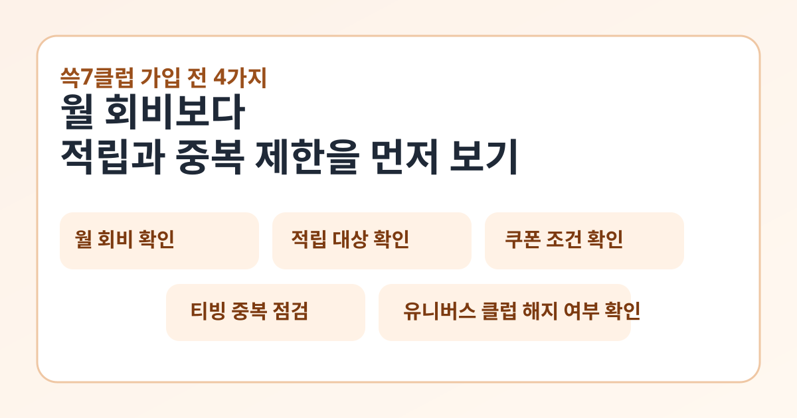

쓱7클럽을 검색하면 “신규 혜택”이나 “할인쿠폰”이 먼저 보이지만, 실제로 가입 전에 봐야 할 것은 월 회비보다 내가 얼마나 자주 장보는지, 기존 멤버십과 겹치지 않는지, 쿠폰과 적립이 어디까지 적용되는지입니다.
이 글은 2026년 3월 21일 기준 SSG닷컴 공식 이벤트 페이지와 쓱7클럽 FAQ를 바탕으로 정리했습니다. 이벤트성 혜택은 조기 종료되거나 바뀔 수 있으니, 실제 가입 직전에는 아래 공식 링크에서 최신 문구를 다시 확인하세요.

2026년 3월 21일 기준 공식 페이지에서 바로 보이는 핵심 혜택
SSG닷컴 공식 이벤트 페이지에는 현재 쓱7클럽 월 2,900원, 쓱7클럽+티빙 월 3,900원으로 안내돼 있습니다. 같은 페이지에는 장보기 7% 적립, 신세계백화점몰·신세계몰 7% 쿠폰 2장과 5% 쿠폰 2장, 3개월 캐시백, 전용 특가, 백화점몰 반품비 무료가 함께 적혀 있습니다.
다만 이런 문구는 모두 상시 고정값으로 보면 안 됩니다. 공식 유의사항에는 혜택이 변경 또는 조기 종료될 수 있다고 적혀 있으므로, 기사 제목만 믿기보다 가입 화면과 유의사항을 같이 보는 편이 안전합니다.
먼저 계산할 것: 월 회비보다 적립이 더 큰지
- 쓱7클럽: 월 회비 2,900원
- 쓱7클럽+티빙: 월 회비 3,900원
- 장보기 적립: 쓱배송은 7%, 일부 판매자배송 식품군은 3%
- 월 누적 적립 한도: 최대 5만 원
공식 페이지를 보면 적립은 배송 완료 후 SSG머니로 들어오고, 배송비와 할인, 쿠폰, 장보기지원금 사용액을 제외한 실결제 금액 기준으로 계산됩니다. 그래서 광고 문구의 적립률만 보기보다, 내가 실제로 자주 사는 품목이 적립 대상인지를 먼저 보는 편이 낫습니다.
쿠폰은 몇 장 주는지보다 조건을 먼저 보세요
공식 안내에는 7% 할인 쿠폰 2장, 5% 할인 쿠폰 2장이 적혀 있습니다. 다만 기준 금액과 최대 할인액이 함께 붙습니다.
- 7% 쿠폰 2장: 4만 원 이상 주문 시 최대 1만 원 할인
- 5% 쿠폰 2장: 2만 원 이상 주문 시 최대 2만 원 할인
- 지급 시점: 가입 즉시 지급, 이후 매월 1일 쿠폰함에서 확인
- 주의: 적립, 카드 할인, 다른 쿠폰과 중복 적용되지 않을 수 있음
특히 공식 유의사항에는 현금성 상품, 무형 서비스, 초특가 상품, 일부 브랜드 상품은 제한될 수 있다고 적혀 있습니다. 그래서 “쿠폰이 많다”보다 내가 사려는 카테고리에 실제로 먹히는지를 확인해야 합니다.
티빙 결합형은 누구에게 맞을까요?
공식 페이지에는 쓱7클럽+티빙 상품이 별도로 안내돼 있고, 티빙 PC 또는 앱에서 시청하도록 적혀 있습니다. 이미 다른 경로로 티빙을 결제 중이라면 중복 결제 여부부터 확인해야 합니다.
- 장보기도 자주 하고 티빙도 실제로 본다
- 기존 티빙 결제 경로를 정리할 수 있다
- 다음 유료 결제일부터 상품 변경이 반영되는 점을 이해한다
이 세 가지가 맞지 않으면 일반 쓱7클럽만으로도 충분할 수 있습니다. 결합형은 할인율보다 현재 구독 구조를 얼마나 단순하게 만들 수 있는지가 중요합니다.
가입 전에 특히 확인할 중복 제한
공식 FAQ에는 신세계 유니버스 클럽 이용 중이라면 먼저 해지 후 쓱7클럽 가입이 가능하다고 적혀 있습니다. 또 쓱7클럽 가입 즉시 유니버스 클럽 혜택은 종료된다고 안내합니다.
즉, 이미 다른 신세계 계열 멤버십을 쓰고 있다면 “하나 더 추가” 개념으로 보면 안 됩니다. 기존 혜택을 포기하고 옮기는 구조인지부터 계산해야 손해를 줄일 수 있습니다.
이런 사람에게는 가입 판단이 쉬워집니다
- 주 1회 이상 장보는 경우: 적립 체감이 빠를 수 있습니다
- 신세계몰·백화점몰 구매가 있는 경우: 쿠폰 활용도가 높아집니다
- 티빙을 따로 결제 중인 경우: 결합형이 중복인지 먼저 점검해야 합니다
- 유니버스 클럽 이용 중인 경우: 갈아타기 비용을 먼저 계산해야 합니다
반대로 한 달 장보기 금액이 크지 않거나, 쿠폰 대상 상품 구매가 거의 없다면 월 회비보다 체감 이익이 작을 수 있습니다.
한 번에 요약하면
- 2026년 3월 21일 기준 공식 페이지에는 쓱7클럽 월 2,900원, 쓱7클럽+티빙 월 3,900원이 안내돼 있습니다
- 핵심 혜택은 장보기 적립, 쿠폰, 3개월 캐시백, 반품비 무료입니다
- 쿠폰과 적립은 중복 제한, 적용 제외 상품, 실결제 기준을 같이 봐야 합니다
- 유니버스 클럽과 중복 사용 구조가 아니다는 점도 꼭 확인해야 합니다
- 혜택은 변경될 수 있으니 가입 직전 공식 이벤트 페이지와 FAQ를 다시 확인하는 편이 안전합니다
자주 묻는 질문
Q. 기사에 나온 신규 쿠폰만 보고 바로 가입해도 될까요?
그렇게 보기 어렵습니다. 공식 페이지 기준으로는 쿠폰 외에도 적립 기준, 적용 제외, 중복 제한이 함께 붙습니다.
Q. 쓱7클럽과 유니버스 클럽을 같이 쓸 수 있나요?
공식 FAQ에는 유니버스 클럽을 해지한 뒤 쓱7클럽 가입이 가능하다고 안내돼 있습니다. 기존 혜택 종료 여부를 먼저 확인하세요.
Q. 쿠폰은 언제 확인하나요?
공식 유의사항 기준으로 가입 즉시 지급되고, 이후에는 매월 1일 쿠폰함에서 확인할 수 있습니다.
공식 링크
혜택 문구와 기간 한정 보너스는 바뀔 수 있습니다. 실제 가입 전에는 위 공식 페이지의 유의사항과 현재 결제 화면을 다시 확인하세요.